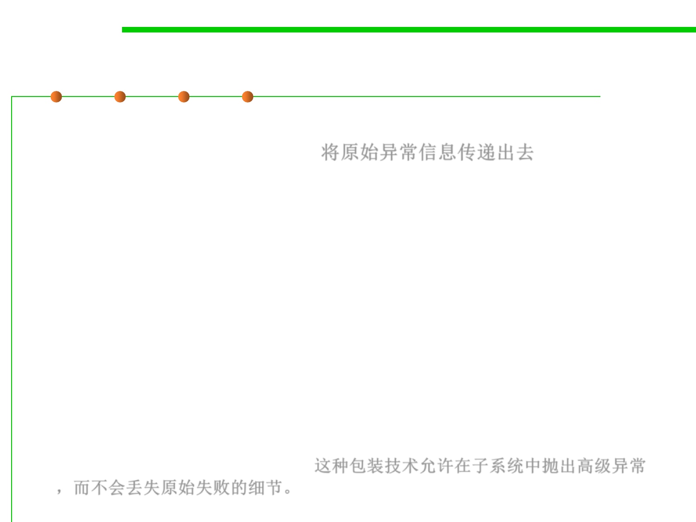

7.2 Error and Exception Handling
Rethrowing and Chaining Exceptions
▪ However, it is a better idea to set the original exception as the
“cause” of the new exception: 将原始异常信息传递出去
try {
access the database
}
catch (SQLException e) {
Throwable se = new ServletException("database error");
se.initCause(e);
throw se;
}
▪ When the exception is caught, the original exception can be
retrieved
Throwable e = se.getCause();
▪ This wrapping technique is highly recommended. It allows you to
throw high level exceptions in subsystems without losing the
details of the original failure.这种包装技术允许在子系统中抛出高级异常
，而不会丢失原始失败的细节。